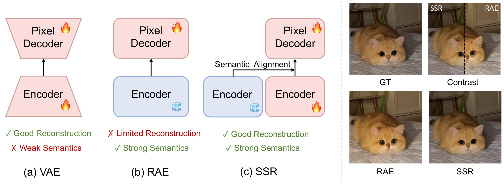
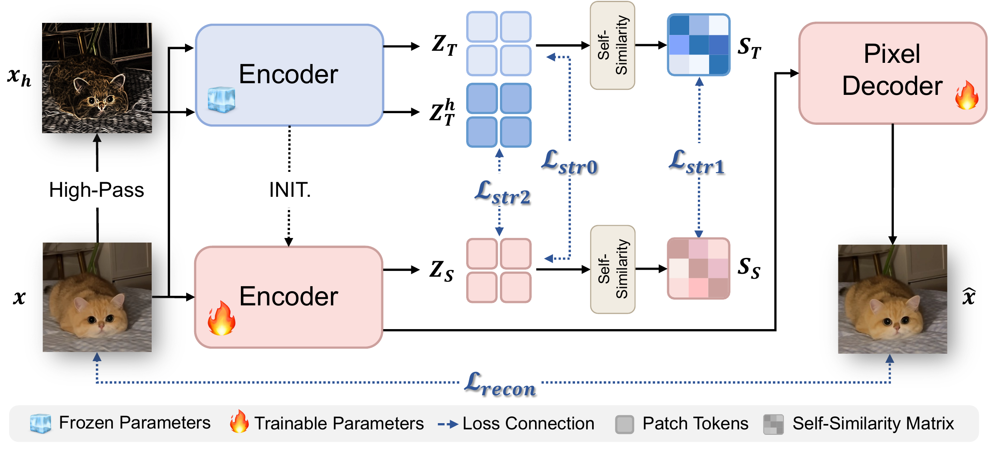

One Unified Representation: Resolving the Appearance‑Semantics Dilemma via Structural Regularization
*Equal contribution. †Work done during an internship. ‡Project lead. ✉Corresponding author.
1Zhejiang University 2MMLab, The Chinese University of Hong Kong 3China Mobile Research Institute, Beijing, China
Can a single representation space unify reconstruction, perception and generation without sacrificing any?
We propose Semantic Structure Regularization (SSR), which lets a semantic ViT encoder learn appearance details for reconstruction while keeping its semantic structure intact.
- Reconstruction
- 0.38 rFID
- 35.6% lower than RAE
- Perception
- 83.8 linear probe
- on par with DINOv3
- Generation
- 1.63 gFID
- 80 epochs, with guidance
Abstract
The Representation Autoencoder (RAE) shows that a frozen high-dimensional semantic ViT representation enables both image reconstruction and DiT-based generation. However, RAE's semantic-only representation lacks appearance details, yielding suboptimal reconstruction. Full fine-tuning the encoder with reconstruction loss induces catastrophic semantic collapse: the encoder overfits to appearance, loses semantic discriminability, and cripples generation. This failure arises because the reconstruction loss imposes an appearance prior that erodes semantic structure.
To resolve this conflict, we propose Semantic Structure Regularization (SSR). SSR builds on self-distillation, using a learnable student and a frozen teacher that retains the original semantics. In addition to standard latent alignment, which forces the student's representation to match the teacher's, we introduce two complementary regularizers that prevent appearance overfitting from corrupting semantic structure. First, spatial self-similarity distillation forces the student to reproduce the teacher's patch-wise relational patterns. Invariant to appearance changes, this relational signature anchors high-order semantics and prevents the sacrifice of structure for pixel fidelity. Second, structure-anchored alignment decouples structure from appearance. Using a frequency-domain transform, we extract a high-frequency structural map (edges, boundaries) from each image while discarding low-frequency appearance. The teacher's representation of this structural map then regularizes the student's representation of the original image.
Consequently, the student learns appearance details from the reconstruction loss without penalty, where the regularization enforces only structural consistency and enables pixel-level encoding without semantic drift. The result is a unified representation that excels at high-fidelity reconstruction, discriminative perception, and efficient DiT-based generation. Our work provides a principled path toward a single semantic space bridging perception and generation, challenging the classic dichotomy.
Key takeaways
- Reconstruction and semantics conflict. Naively fine-tuning the encoder for reconstruction lowers rFID to 0.21, but linear-probe accuracy drops to 82.5 and gFID worsens to 2.74: the reconstruction loss erodes the relational geometry of semantic features.
- Preserve relations, not feature values. Matching the teacher's patch-wise affinity matrix keeps object layout and scene organization, while leaving room to encode appearance in complementary feature directions.
- High frequencies carry structure. The teacher's encoding of a high-pass structural map gives the student an explicit structural target that does not penalize appearance.
- One latent space serves all three tasks. SSR lowers RAE's rFID from 0.59 to 0.38, keeps DINOv3's 83.8% linear-probe accuracy, and reaches gFID 1.63 with guidance in 80 epochs.
Method


Results
Instantiated with DINOv3-B, SSR improves reconstruction over RAE while keeping its semantic discriminability, and gives better generation than both RAE and naive fine-tuning.
| Model | Reconstruction | Perception | Generation | ||||||||
|---|---|---|---|---|---|---|---|---|---|---|---|
| rFID↓ | PSNR↑ | SSIM↑ | LP↑ | ADE20k↑ | NYU↓ | NAVI↑ | gFID↓ | IS↑ | Prec.↑ | Rec.↑ | |
| RAE | 0.59 | 19.27 | 0.487 | 83.8 | 51.8 | 0.373 | 58.8 | 2.40 | 196.57 | 0.82 | 0.60 |
| Naive Fine-tune | 0.21 | 25.92 | 0.761 | 82.5 | 50.9 | 0.425 | 58.0 | 2.74 | 186.16 | 0.78 | 0.62 |
| SSR | 0.38 | 22.26 | 0.607 | 83.8 | 51.4 | 0.389 | 58.7 | 2.30 | 201.36 | 0.81 | 0.60 |
Overview. Naive Fine-tune denotes full encoder fine-tuning with reconstruction loss and basic latent distillation (ℒrecon + ℒstr0) only, without structural regularization.
Reconstruction
SSR reaches an rFID of 0.38 on ImageNet 256×256, the best among continuous-latent methods, and improves PSNR by 2.99 and SSIM by 0.12 over RAE.
| Model | Type | Ratio | rFID↓ | PSNR↑ | SSIM↑ |
|---|---|---|---|---|---|
| LlamaGen | Discrete | 16 | 2.19 | 20.79 | 0.675 |
| Show-o | Discrete | 16 | 3.50 | 21.34 | 0.590 |
| TokenFlow | Discrete | 16 | 1.37 | 21.41 | 0.687 |
| DualViTok | Discrete | 16 | 1.37 | 22.53 | 0.741 |
| VILA-U | Discrete | 16 | 1.80 | – | – |
| BLIP3o | Continuous | 16 | 3.28 | 14.71 | 0.58 |
| Emu2 | Continuous | 14 | 3.27 | 13.49 | 0.423 |
| UniLIP | Continuous | 32 | 0.79 | 22.99 | 0.747 |
| RAE | Continuous | 16 | 0.59 | 19.27 | 0.487 |
| SSR | Continuous | 16 | 0.38−0.21 | 22.26+2.99 | 0.607+0.12 |
| RAE† | Continuous | 16 | 0.44 | 20.51 | 0.543 |
| SSR† | Continuous | 16 | 0.29−0.15 | 23.84+3.33 | 0.685+0.14 |
Reconstruction on ImageNet 256×256. †No noise added to the latent. Red numbers are absolute changes over the corresponding RAE baseline.
Perception
After adaptation for reconstruction, SSR matches DINOv3 on classification and dense prediction, while naive fine-tuning degrades every metric. On 10 few-shot classification datasets it also stays on par with DINOv3.
| Model | Linear Probe↑ | ADE20K↑ | NYU↓ | NAVI↑ |
|---|---|---|---|---|
| SigLIP 2 | – | 41.6 | 0.512 | 25.4 |
| DINOv2 | 83.0 | 48.4 | 0.416 | 56.9 |
| DINOv3 | 83.8 | 51.8 | 0.373 | 58.8 |
| Naive Fine-tune | 82.5 | 50.9 | 0.425 | 58.0 |
| SSR | 83.8+1.3 | 51.4+0.5 | 0.389−0.036 | 58.7+0.7 |
Downstream perception. ImageNet-1K linear probing (top-1), ADE20K segmentation (mIoU), NYU Depth V2 (RMSE) and NAVI correspondence (recall). Red numbers are changes over Naive Fine-tune.
Generation
A DiT-DH-XL trained for 80 epochs on SSR latents reaches gFID 2.30 without guidance and 1.63 with AutoGuidance, ahead of RAE and of VAE-based latent diffusion at the same training budget.
| Model | #Params | Epochs | w/o guidance | w/ guidance | ||||||
|---|---|---|---|---|---|---|---|---|---|---|
| gFID↓ | IS↑ | Prec.↑ | Rec.↑ | gFID↓ | IS↑ | Prec.↑ | Rec.↑ | |||
| Pixel diffusion | ||||||||||
| PixNerd | 700M | 160 | – | – | – | – | 2.15 | 297.0 | 0.79 | 0.59 |
| PixelFlow | 677M | 320 | – | – | – | – | 1.98 | 282.1 | 0.81 | 0.60 |
| ADM | 554M | 400 | 10.94 | 101.0 | 0.69 | 0.63 | 3.94 | 215.8 | 0.83 | 0.53 |
| Latent diffusion with VAE | ||||||||||
| MaskDiT | 675M | 1600 | 5.69 | 177.9 | 0.74 | 0.60 | 2.28 | 276.6 | 0.80 | 0.61 |
| DiT | 675M | 1400 | 9.62 | 121.5 | 0.67 | 0.67 | 2.27 | 278.2 | 0.83 | 0.57 |
| SiT | 675M | 1400 | 8.61 | 131.7 | 0.68 | 0.67 | 2.06 | 270.3 | 0.82 | 0.59 |
| MDTv2 | 675M | 1080 | – | – | – | – | 1.58 | 314.7 | 0.79 | 0.65 |
| REPA-E | 675M | 80 | 3.46 | 159.8 | 0.77 | 0.63 | 1.67 | 266.3 | 0.80 | 0.63 |
| DDT | 675M | 80 | 6.62 | 135.2 | 0.69 | 0.67 | 1.52 | 263.7 | 0.78 | 0.63 |
| Latent diffusion with RAE | ||||||||||
| LV-RAE | 839M | 800 | 2.42 | 223.8 | 0.77 | 0.64 | 1.82 | 249.7 | 0.75 | 0.67 |
| RAE | 839M | 80 | 2.40 | 196.57 | 0.82 | 0.60 | 1.75 | 219.44 | 0.81 | 0.62 |
| Naive Fine-tune | 839M | 80 | 2.74 | 186.16 | 0.78 | 0.62 | – | – | – | – |
| SSR | 839M | 80 | 2.30 | 201.36 | 0.81 | 0.60 | 1.63 | 228.43 | 0.82 | 0.61 |
Class-conditional generation on ImageNet 256×256. Results with guidance use AutoGuidance with a guidance scale of 1.42.
Citation
@inproceedings{TODO,
title = {One Unified Representation: Resolving the Appearance-Semantics Dilemma via Structural Regularization},
author = {Yang, Ruiqi and Zhou, Fei and Zhang, Yi and Li, Liang and Yue, Xiangyu},
booktitle = {TODO},
year = {2026}
}